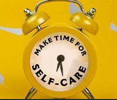
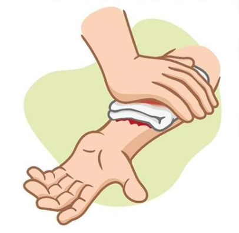
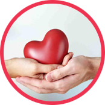
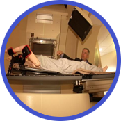
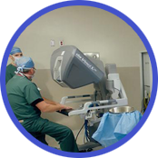
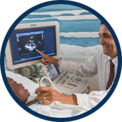
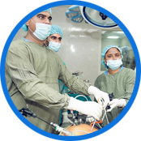
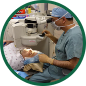
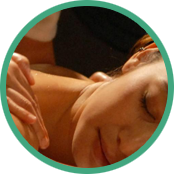

Swayam provides information about diseases, symptoms and treatments, and also what are the steps we have to have in order to experience a happy and healthy life. You can prevent any disease by premedicating Your body and maintaining healthy food habits.
Swayam at a Glance
Swayam provides information about diseases, symptoms and treatments, and also what are the steps we have to have in order to experience a happy and healthy life. You can prevent any disease by premedicating Your body and maintaining healthy food habits.

Importance Of Self Care
Swayam provides information about diseases, symptoms and treatments, and also what are the steps we have to have in order to experience a happy and healthy life. You can prevent any disease by premedicating Your body and maintaining healthy food habits.
Who Can Use Swayam
Swayam provides information about diseases, symptoms and treatments, and also what are the steps we have to have in order to experience a happy and healthy life. You can prevent any disease by premedicating Your body and maintaining healthy food habits.
Calorie Chart
There are enough confusions about what to eat and what not to eat and on top of that most of us fall prey to the bewildering information available
on internet regarding calorie count of food items. So, here it is. Whether you are clean eater or a calorie watcher, unless you have consulted a
nutritionist or dietician, it is difficult for anyone to maintain a stringent food habit with the exact calorie count.
Reaching calorie aims may seem a little tough, but with this Indian food items with calorie chart, we have tried to make it a little easier for
you while you look out to develop a healthy lifestyle with a clean eating habit. This Indian food chart with calorie count has been
designed by Gympik’s diet expert and Nutritionist, Sujetha Shetty to help the promising health enthusiasts and of course, normal
individuals at a large, to make a sustainable diet plan while appending flexibility in meals and kick out the monotony of salad
diet and those torturing fad diets.
Here is a list of foods of different category, groups etc. for you to plan and maintain a healthy diet plan
We make our patients feel at home, while they are away from home.We make sure that the patients and their relatives feel safe and comfortable in India.
We leave no stone unturned to ensure that our patients get the best treatment possible at affordable cost without compromising the quality.
Do's
These are some of the DO's that we have to follow
Try to eat more unprocessed foods
Include whole grains in your diet
Monitor your serving sizes
Dont's
These are some of the DONT's that we have to follow
Skip breakfast
Eat excessively saturated fat
Give up your entire diet plan for a small mistake
Healthy-Habits
These are some of the Healthy Food Habbits that we must follow
Follow Healthy Diet regularly
Drink adequate amount of water
Get enough sleep and eat breakfast.

First-Aid Process
Following are the steps you have to follow before going to perform first aid
Wash your Hands properly
Stop the bleeding
Clean the wound
Remove any dirt/debris
Blood Pressure
Blood pressure is the measure of the force of blood pushing against blood vessel walls. The heart pumps blood into blood vessels, which carry the blood throughout the body.
Stick to a diet plan and exercise daily. Exercising for at least 30 minutes a day is mandatory.
Salt intake should be strictly monitored. Sodium intake on any given day should be kept below 2.4 gm.
Ask your doctor about salts that are sodium free and can be used to replace common table salt. Go through the components (minerals) present in the substituted products and cross check that they don’t have any harmful effects on your health
Stick to your medication schedule and preferably have a fixed time for taking your pills.
Hypertension can have a negative impact on the blood vessels and other organs. Doctors recommend getting a routine check-up and tests done from time to time.
Our Treatments
Swayam Provides

Blood Pressure
Blood pressure is the force of blood pushing against the walls of your arteries, which carry blood from your heart to other parts of your body. Blood pressure normally rises and falls throughout the day.

Cancer Treatment in India
Our hospitals are equipped with state of the art equipment, facilities and experienced, faculty & staff, is wholly committed to highly personalized and comprehensive cancer care.

First aid
By administering immediate care during an emergency, you can help an ill or injured person before EMS, Emergency Medical Services arrive.
Cardiovascular Problems
Cardiovascular diseases (CVDs) affect your heart and blood vessels. Almost half of all adults in the U.S. have at least one form of heart disease. These diseases can affect one or many parts of your heart and/or blood vessels.

Eye Care
Most people have eye problems at one time or another. Some are minor and will go away on their own, or are easy to treat at home. Others need a specialist’s care. Whether your vision isn’t what it used to be, or never was that great.
Unconscious
Lay the patient on the bed loosen the clothes, bring the patient leg to the 45 degrees Do not make people surrounding him. Open the doors of the room. Encourage the person with good soothing words.
Dental care
Maintaining proper dental and oral hygiene is an essential part of your overall health and well-being .Poor oral hygiene can lead to tooth decay, periodontal (gum) disease, alveolar bone loss, and ultimately tooth loss

ENT and Head Neck
Ear infections in children are a major health problem and may be associated with hearing impairment and delayed language development.The most commonly identified ear infection is known as acute otitis media which is caused by swelling and infection in the middle ear.
Paediatric care
Indices of cardiovascular autonomic neuropathy (CAN) in experimental models of Type 1 diabetes mellitus (T1DM) are often contrary to clinical data. Here, we investigated whether a relatable insulin-treated model of T1DM. . .

Endovascular Problems
In a meta-analysis of individual patient data from 5 randomized controlled trials, endovascular treatment (EVT) mainly using a stent retriever achieved successful recanalization in 71.1% of patients suffering from acute stroke due to anterior circulation large artery occlusion

Cold & Cough
Add 3-4 spoons of tulasi juice with 1-2 black peppers and drink for 3 times a day. Add 3-4 betel leaves juice to 1-2 black pepper drink daily for 3 times . . .
Neurological Problems
The peripheral nerves located deep under the skin can also be vulnerable to damage. Neurological disorders can affect an entire neurological pathway or a single neuron. Even a small disturbance to a neuron’s structural pathway can result in dysfunction.